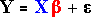

Simple linear model
The key to describing the general linear model and its least squares estimates is the use of matrix notation. We first consider the response mean for a simple linear model (one explanatory variable),

If these n means (for i = 1 to n) are stacked in a column (a vector), they can be collectively expressed as the product of two matrices,

The diagram below highlights the terms that are multiplied together to get the response mean. Click on any row of the X-matrix to see the highlighted values that are used to form the corresponding response mean.
Note how the column of 1's picks out the intercept parameter of the model.
Expressing the complete model with matrices
Having represented the vector of response means as a product of two matrices, it is relatively straightforward to write the complete normal linear model in terms of matrices:

where the εi are independent normally distributed errors. More concisely, we write:

We next show how the linear model for an actual data set is expressed with matrices.
Tensile strength of concrete
The tensile strength of concrete increases while it dries (the curing time). The data below arose from an experiment in which slabs of concrete were allowed to cure for different periods and their tensile strength (kg/cm2) was measured.
| Days curing | Tensile strength | Days curing | Tensile strength | |
|---|---|---|---|---|
| 1 1 1 2 2 2 3 3 3 3 3 |
13.0 13.3 11.8 21.9 24.5 24.7 29.8 28.0 24.1 24.2 26.2 |
7 7 7 7 7 28 28 28 28 28 |
32.4 30.4 34.5 33.1 35.7 41.8 42.6 40.3 35.7 37.3 |
To analyse the data, we may assume that the tensile strengths of the 21 specimens satisfy a normal linear model. The diagram below expresses this model in matrix notation.
Click any row to see the model for that specimen.